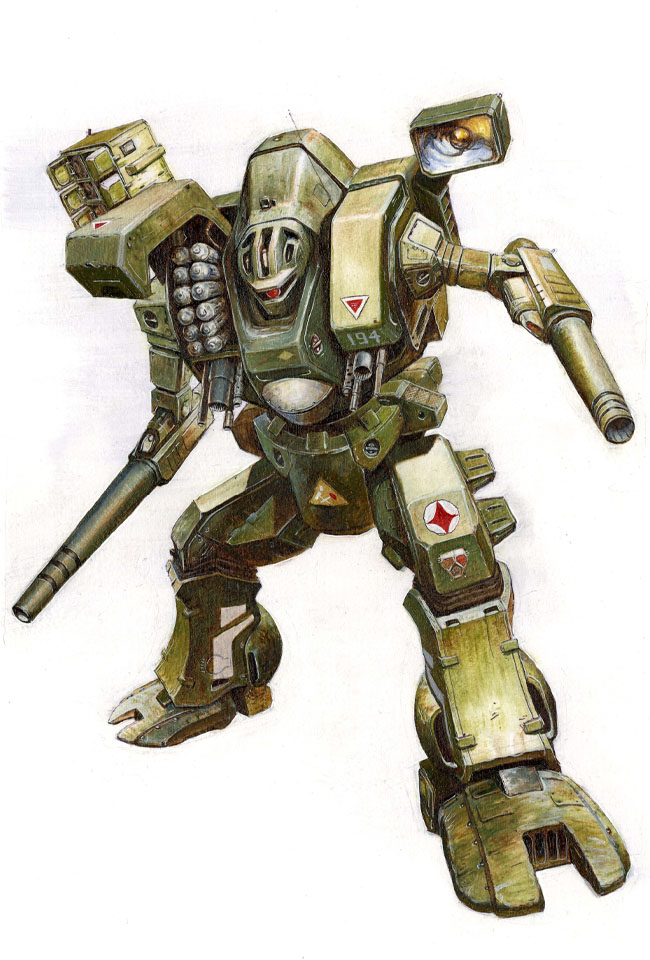
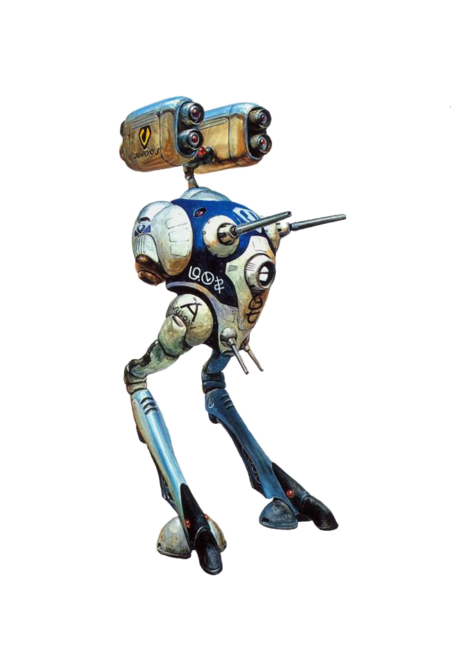
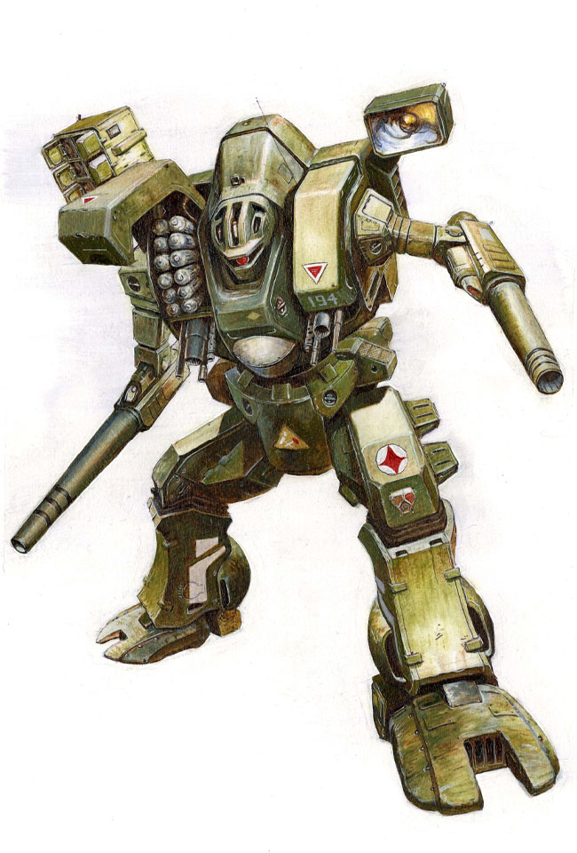
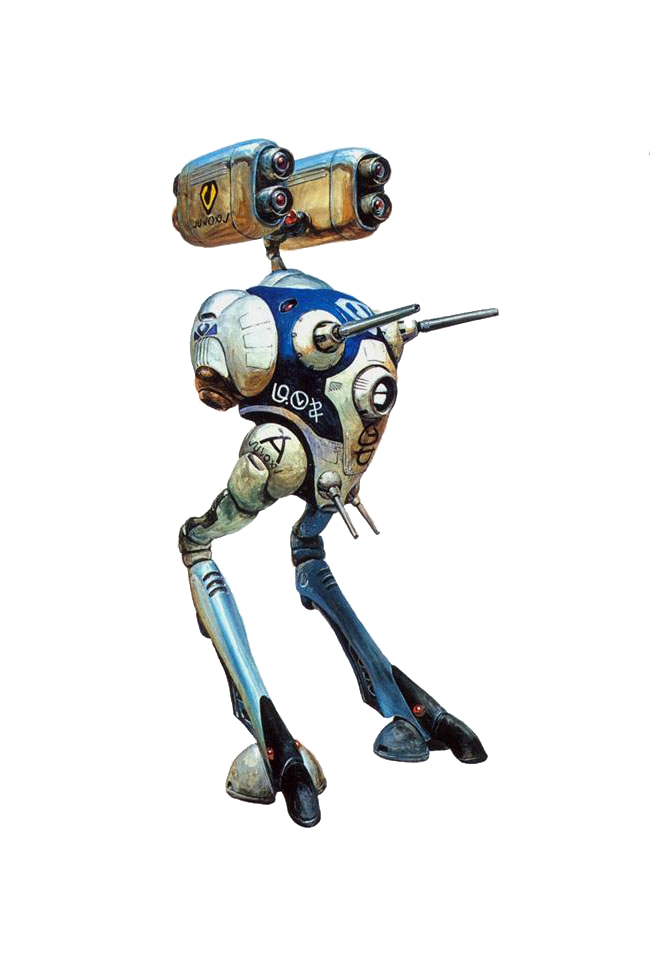

Macross
An evangelist of the mecha genre, singing a song of peace across the stars
 



"Recognize what you've been given. The Scottish really just don't know what they have. If they did, they would have rid themselves of it ages ago."
—You
Macross Art Tour - 2026
| Dates | Locale | Hours | Tickets |
|---|---|---|---|
| October 10-24 | Salem, The House with the Spooky Porch | Dusk-Dawn | via HauntedTix |
| November 1-15 | Toronto, That Big Tower Everyone Takes Pictures Of | Mon-Fri: 9AM-9PM | via Ticketmaster |
| November 20-30 | New Orleans, The Jazz Alley Shortcut | Wed-Sun: 2PM-10PM | via LiveNation |
| December 5-19 | Reykjavik, The Igloo That Isn't Actually Ice | Daily: 11AM-5PM | via GuideToIceland |
| December 22-28 | North Pole, Santa’s Day Off Lounge | Closed for Holiday | via Reindeer Express |
SDF-1 Macross's Annual Event: Swimsuit Competition Tactical Highlights
- Lisa Hayes maintains military-grade posture even in a standard-issue UN Spacy swimsuit, proving leadership is 90% back strength.
- Minmay’s ruffles and bows are technically a wind-resistance nightmare, but they maximize her "distraction-to-Zentradi" ratio by 15%.
- Cutey Honey’s outfit is actually a sophisticated nanomachine array, meaning she can change from a bikini to a full scuba suit before the judges finish their notes.
- Faye Valentine’s Ganymede-style bikini features literal jewelry chains, which doubles as emergency tethering gear for asteroid mining.
- Lum Invader (Urusei Yatsura) technically wins the "Minimalist Material" category by using tiger-striped fabric that defies both gravity and common decency.
- Lisa Hayes refused to wear a sash, stating that her rank should be visible on her shoulder regardless of how much skin is showing.
- Minmay attempted to sing "My Boyfriend is a Pilot" during the catwalk, causing a 40% drop in judge productivity due to spontaneous humming.
- Cutey Honey’s "Honey Flash" transformation mid-walk was disqualified by the committee for being "unfairly magical" and "blinding the front row."
- The competition was briefly paused when Lisa Hayes began performing a live field-strip of a Valkyrie engine on the pool deck to show "real skill."
- Minmay’s swimsuit is rumored to be made of 100% recycled pop-star glitter, which is remarkably buoyant but environmentally questionable.
- Cutey Honey can technically win every category by transforming into a different "Honey" for each judge’s specific demographic preference.
- Faye Valentine demanded a $50,000 appearance fee and a box of high-end cigars just to step onto the diving board.
- Lisa’s swimsuit is UV-shielded for long-term exposure to the Grand Cannon’s radiation—practical, if a bit drab in color.
- Minmay’s fan club attempted to rig the voting by deploying 4,000 automated "Vote Minmay" drones over the stadium.
- Cutey Honey’s heart-shaped choker is the only accessory on stage capable of firing a tactical laser beam.
- The judges noted that Lisa Hayes is the only contestant who looks like she’s actually ready to command a fleet if the pool is attacked.
- Minmay’s "stage presence" is so high she accidentally convinced three Zentradi spectators to defect to the Earth side just by waving.
- Cutey Honey’s "Pink Honey" swimsuit variant was noted for its "aerodynamic efficiency during high-speed combat."
- Faye Valentine’s "shimmering silver cover-up" provides +5 to Charisma and +10 to escaping a debt collector.
- Lisa Hayes brought a clipboard to the stage to grade the other contestants on their "tactical readiness" and "uniform discipline."
- Minmay’s "Scottish Plaid" swimsuit variant from the movie was deemed "too much wool for a swimming pool" by the life-guards.
- Cutey Honey's sword was confiscated at the entrance, though she argued it was a "fashion accessory for the modern warrior girl."
- The event ended abruptly when Lisa Hayes detected an incoming fold-jump and ordered everyone to the shelters in under 45 seconds.
- Minmay stayed behind to sign autographs on the debris, proving that pop-stardom is a life-long commitment.
- Ultimately, the judges awarded Lisa Hayes the "Most Likely to Actually Survive a War" trophy, which she immediately traded for more fuel for the SDF-1.
- During the award ceremony, Cutey Honey changed to Armored Honey and confessed her love to Lum, pledging to be her knight for as long as Utena lives.
This year we present a retrospective on The Library of Babel-7: Cultural Shock and the Rayearth Incident
The defection of the Zentradi to the SDF-1 was a watershed moment in the war against the Bodolza fleet, but it created an unforeseen administrative nightmare for the UN Spacy’s IT department. While the "Minmay Attack" had softened their psychological defenses, the Zentradi defectors’ introduction to the SDF-1’s public library terminals—and their subsequent disregard for "Acceptable Use Policies"—led to a cultural meltdown that nearly crashed the fortress’s local area network.
The Cephiro Protocol: Giant Warriors and Magic Knights
The first recorded incident involved a squad of former paratroopers who, while attempting to research "Atmospheric Re-entry Tactics," accidentally discovered a fansite for Magic Knight Rayearth. The results were catastrophic for Zentradi discipline. Accustomed to a life where "giant robots" were purely utilitarian tools of genocide, the defectors were mesmerized by the concept of "Rune Gods"—sentient, elemental mecha fueled by "willpower" and "friendship" rather than fusion reactors.
Witnesses report seeing seven-foot-tall soldiers weeping in the library aisles over the plight of Hikaru, Umi, and Fuu. The idea that a teenage girl’s emotional state could manifest a flame-sword large enough to cleave a starship resonated deeply with the Zentradi "Micronization" anxiety. This led to a brief but intense cult within the ranks where defectors attempted to "summon" their Regult tactical scouts through the power of synchronized chanting, severely disrupting the SDF-1’s quiet hours.
The Sekirei Breach and the Search for "Contracting"
If Rayearth provided a spiritual crisis, the discovery of Sekirei provided a tactical one. Having only recently learned about the concept of human romance, the defectors misinterpreted the "Winged" contract system in Sekirei as a highly efficient Federation recruitment strategy.
The library’s search logs showed a 4,000% spike in queries for "MBI Plan," "Winged Partners," and "Saliva-based power-up mechanics." The Zentradi, who view everything through the lens of combat efficiency, began to believe that the "kissing" they saw in Minmay movies was actually a precursor to a supernatural combat transformation. This resulted in several awkward encounters in the ship’s mess hall, where defectors attempted to "initiate a contract" with unsuspecting bridge technicians in hopes of gaining flight capabilities or energy blasts.
Library Net Usage and the "Protoculture" Filter
The UN Spacy eventually had to implement the "Protocol-7 Web Filter," which restricted access to any media featuring:
- Magical transformations lasting longer than 30 seconds.
- Protagonists who gain strength through the "Power of Love."
- Anything involving "Elementals" or "Heavenly Spirits."
The reasoning was simple: the Zentradi were already prone to "Culture Shock" (or Yak Deculture). Exposing them to the meta-logic of Magic Knight Rayearth—where the laws of physics are subservient to the strength of one's heart—threatened to make them entirely uncontrollable. A Zentradi who believes he can manifest a "Fire Arrow" through sheer belief is a liability to a ship that relies on cold, hard radar data and vacuum-sealed bulkheads.
Conclusion
The "Library Incident" proved that the Zentradi were not just vulnerable to pop music, but to the entire spectrum of Japanese 20th-century niche media. While the military feared the Zentradi might return to the fold of the Gorg Bodolza, the real danger was that they would become so obsessed with the lore of Cephiro or the mechanics of the Sekirei Plan that they would forget to man their stations. In the end, the library terminals were limited to "Read-Only" access for technical manuals, but the damage was done: the seed had been planted that perhaps the SDF-1’s fold-drive was actually powered by a slumbering Rune God.